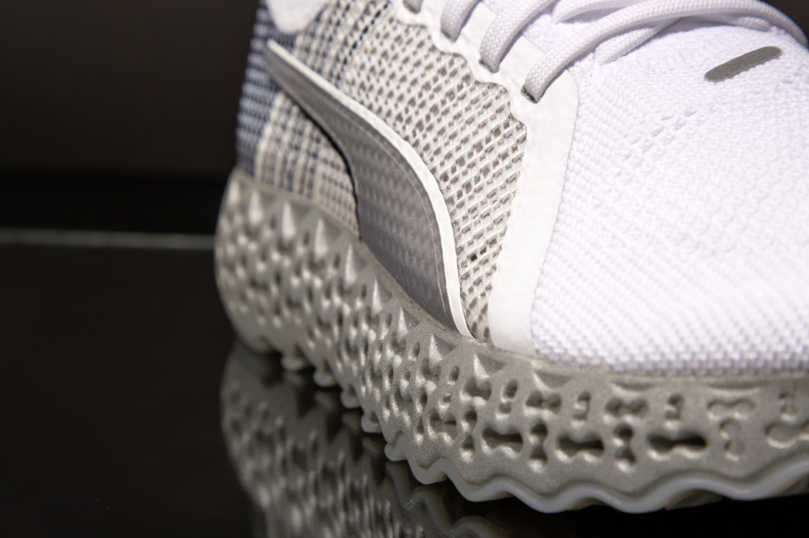
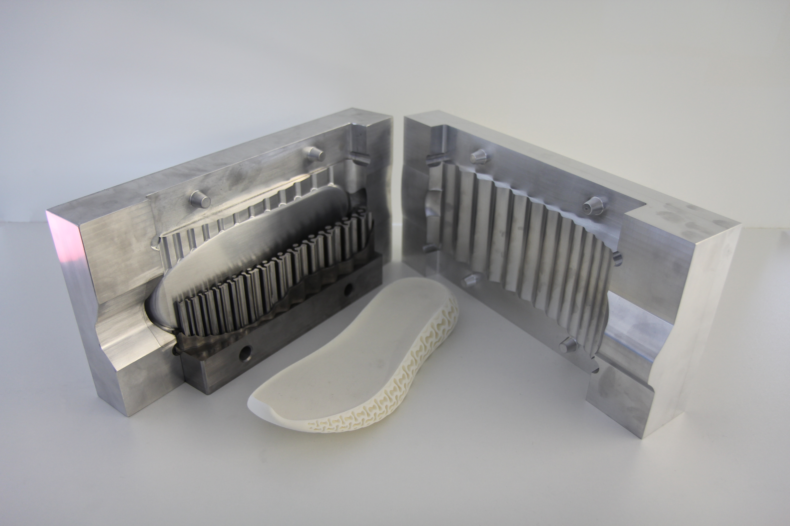
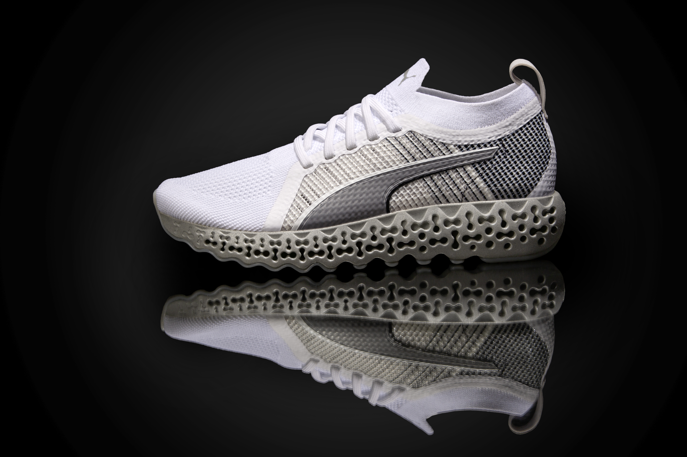
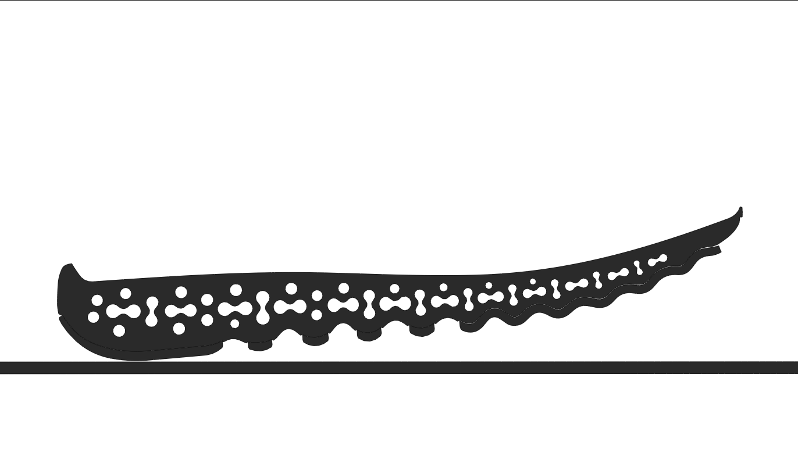
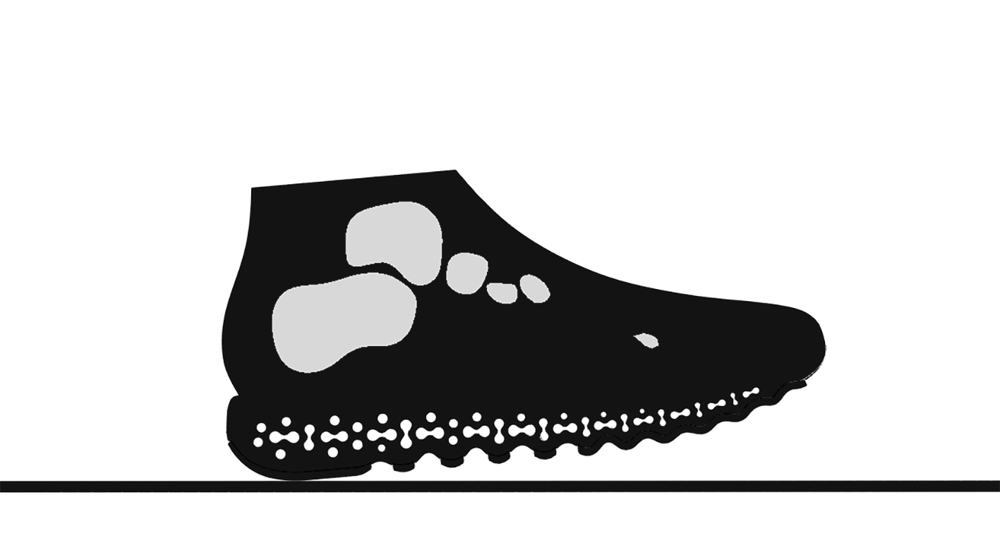
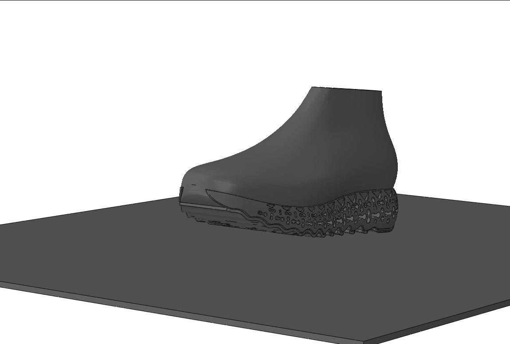
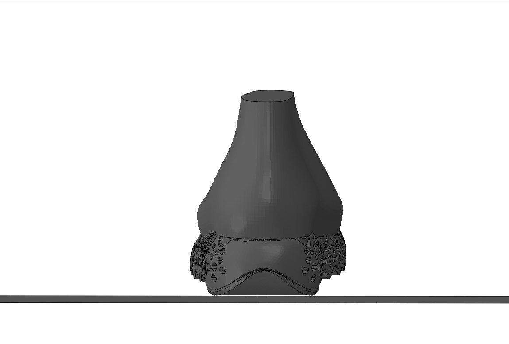
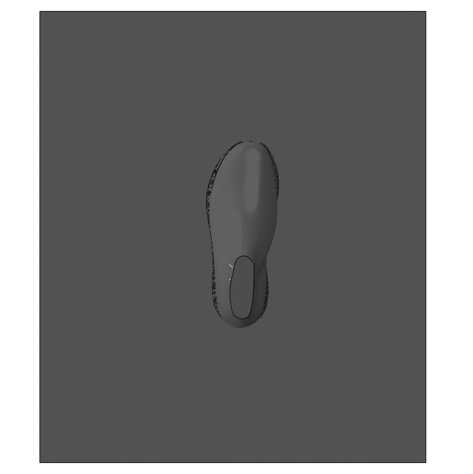
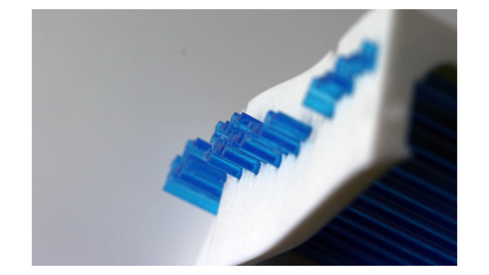
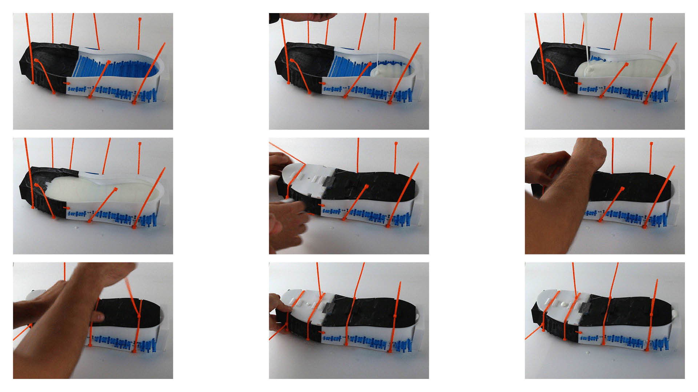

Adaptive Dynamics experience
During my time at MIT Design Lab, I joined the Calibrate Runner project to refine the FEA simulation pipeline. My contribution focused on transforming the workflow from 2D assumptions to full 3D analysis.
This shift enabled more accurate stress and deformation predictions, speeding the design process for auxetic midsole configurations.
Iteration library







Qualitative and quantitative data (plantar pressure, ground reaction forces) informed hundreds of simulation cycles to validate biomechanical constraints.
Workflow upgrade
The core breakthrough was building a 3D mesh and material definition pipeline for hyperelastic and hyperfoam materials. This accelerated iteration across multiple pattern configurations.

Prototyping

